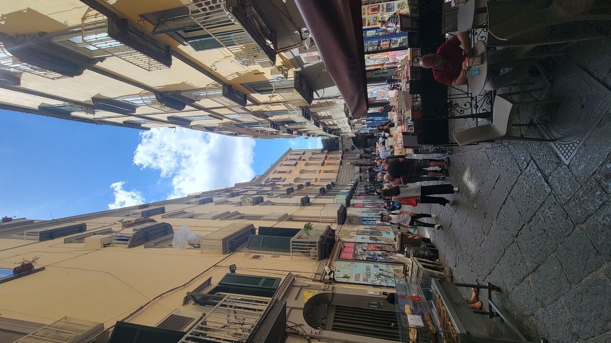
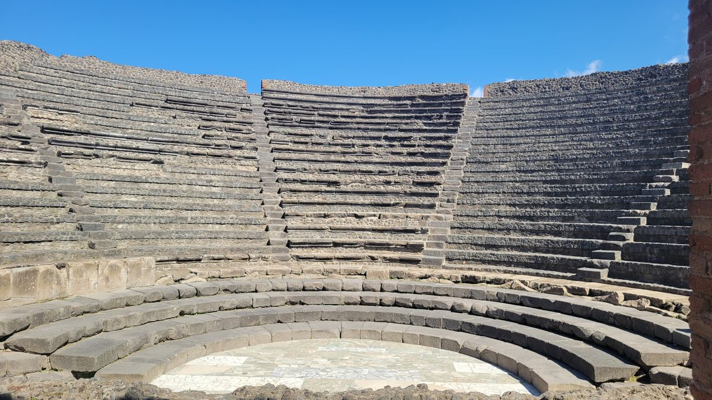
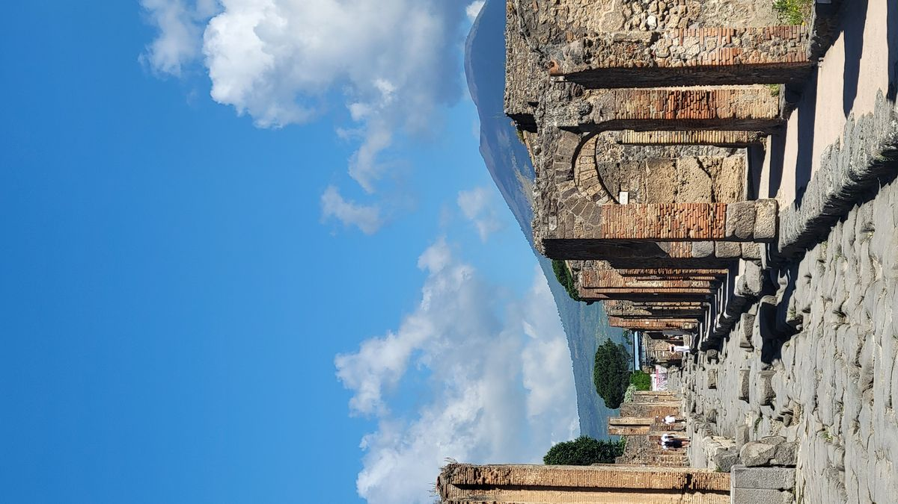
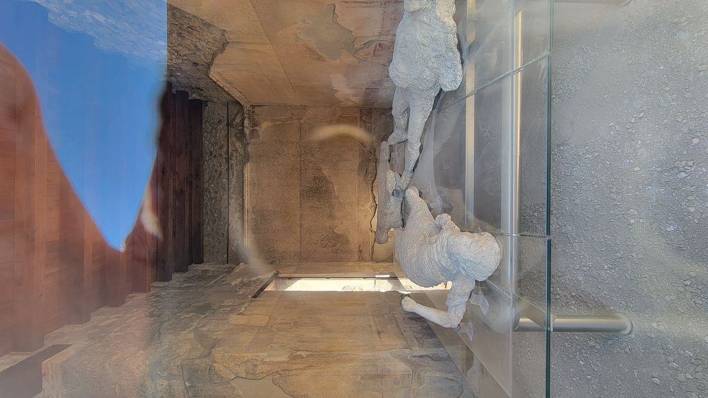
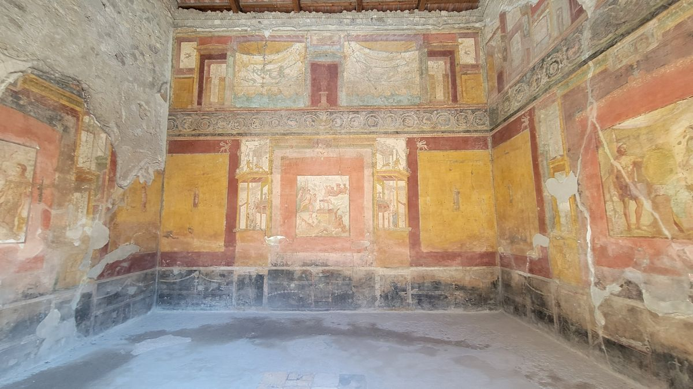
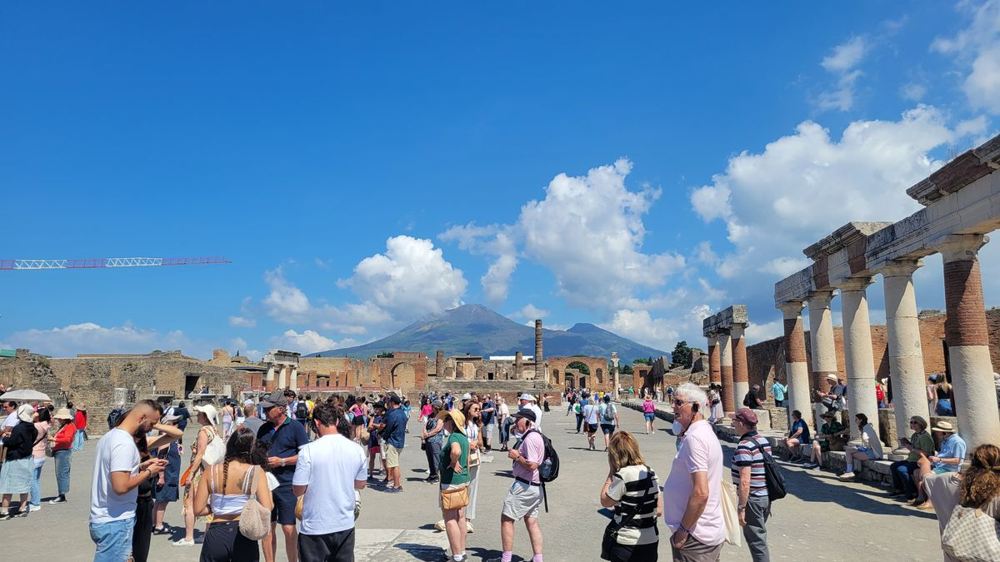
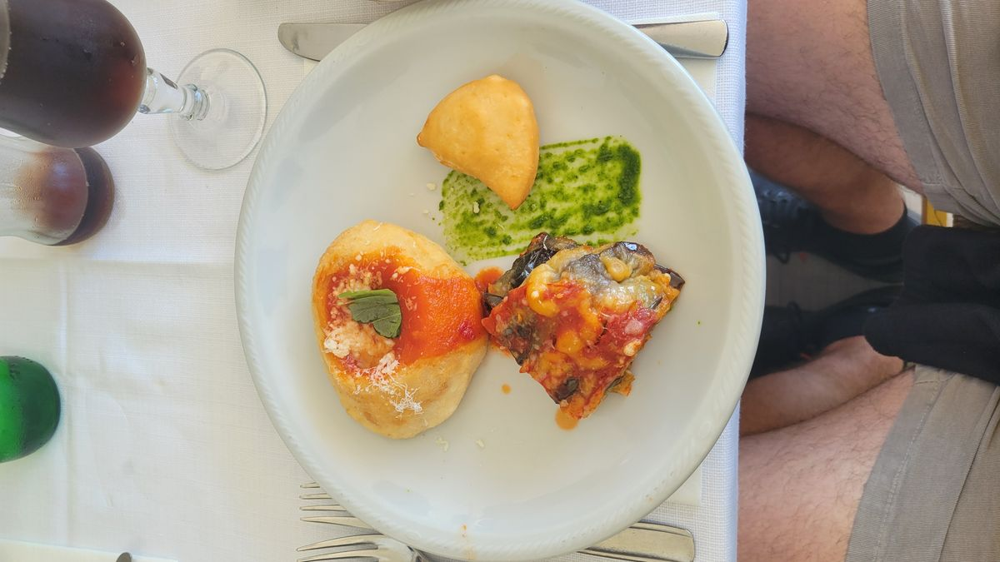
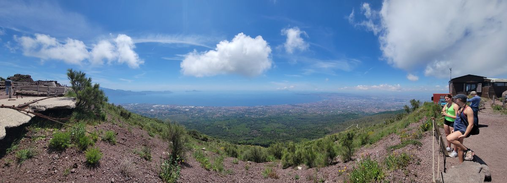
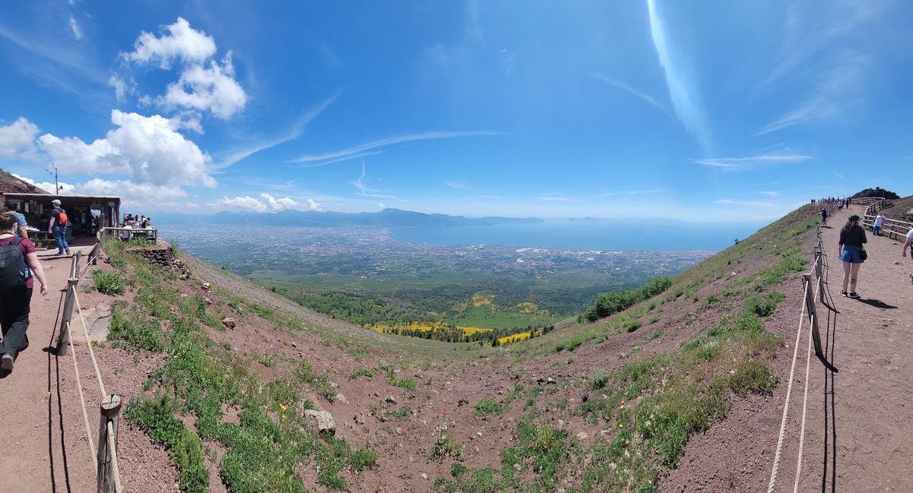
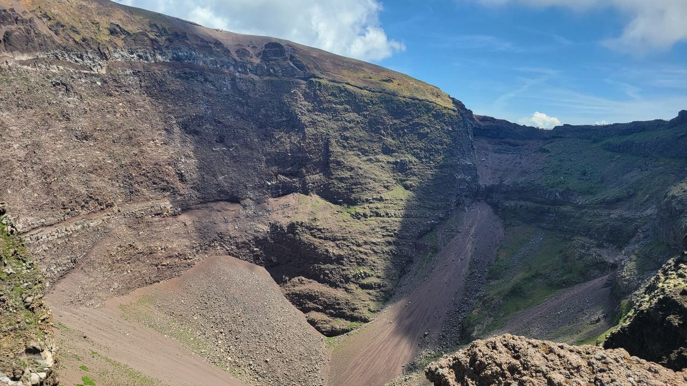

Naples, Italy
After two weeks in Barcelona searching for a long-term place to stay and starting the process to legally reside in Spain for a year, I had completed everything I could for the time being but still had a few weeks before the beginning of my course. Wanting to take full advantage of the remaining time, I jumped on Google Flights looking for a new place to explore. A cheap flight to Naples, Italy, came up on the agenda. Of course, cheap flights on a backpacker’s budget aren’t at the best times, and I woke up earlier than I had in recent months for the quick two-hour flight over the Mediterranean.
Naples was founded by the Greeks in the 8th century BC and eventually became a thriving Roman city. In the centuries following the Roman Empire, the city was under Byzantine and then Norman rule. In the 12th century, it became part of the Kingdom of Sicily. In the 1860s, the unification of Italy led to the city we know today.
Presently, Naples is a vibrant and bustling city known for its rich history and cultural heritage. The third-largest city in Italy boasts stunning architecture and is a convenient starting point for travelers visiting places like Pompeii and the Amalfi Coast. Despite its challenges with waste management and economic disparities compared to Italy’s northern cities, Naples is still a must-see for anyone visiting this beautiful part of the world.

My primary motivation to come to Naples was to see Pompeii. During other parts of this trip, I had luck with guided tours of archaeological sites and found a full-day tour that took the group to both Pompeii and Mt. Vesuvius, the volcano that brought about the end of Pompeii. After meeting the group outside the Naples train station, we boarded the bus for the hour-long drive to the Pompeii archaeological site.
Pompeii was a thriving center of commerce and culture, known for its luxurious villas and bustling streets. But on August 24, 79 AD, Mt. Vesuvius erupted, burying Pompeii under meters of ash and pumice. The sudden disaster preserved buildings, artifacts, and even the bodies of inhabitants, providing an unprecedented snapshot into Roman life.





Pompeii is huge. It’s so big you could never see the whole thing in a day or even three. One person in the group had a request to see a certain part of the site and was told it was a 40-minute drive from the area we were going to see. So, this tour just consisted of the highlights: the residential area, a commerce area, and the main forum or plaza. The tour was too short in my opinion, only about an hour and a half, not to mention competing with tour groups from the cruise ships calling port in Naples today. It just means that I’ll have to keep Pompeii on the to-do list while I’m in Europe.
After our brief excursion, we got back on the bus heading for the top of Mt. Vesuvius, but not before stopping for an Italian lunch to get some much-needed carbs for the short trek ahead.

The caldera of Mt. Vesuvius is now a park with an easy hiking trail, giving tourists a glimpse of the destructive epicenter of this mountain. It hasn’t erupted since 1944, and geologists keep a close eye on it. Any fears of an untimely death like those people in ancient Pompeii can be put to rest, and you can enjoy the panoramic vistas from the top of the mountain in peace.



Naples, often overshadowed by its challenges, reveals itself as a city brimming with life, history, and cultural depth. My visit, driven by the desire to see Pompeii, offered more than I anticipated. Despite the brief and crowded nature of the guided tour, Pompeii's preserved remnants left a lasting impression, underscoring the city's historical significance. The journey to the summit of Mt. Vesuvius, paired with a hearty Italian lunch, provided a fitting conclusion, showcasing the city's resilience and natural beauty. For anyone visiting southern Italy, Naples and its surroundings offer an enriching glimpse into the past while providing a vibrant present-day experience.